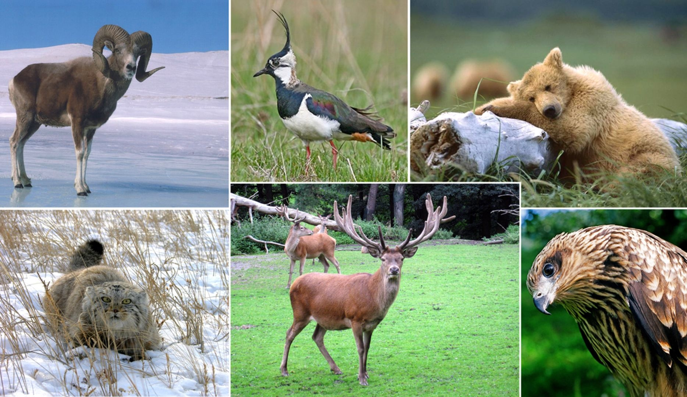
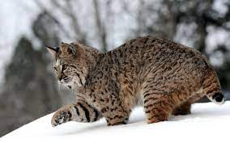
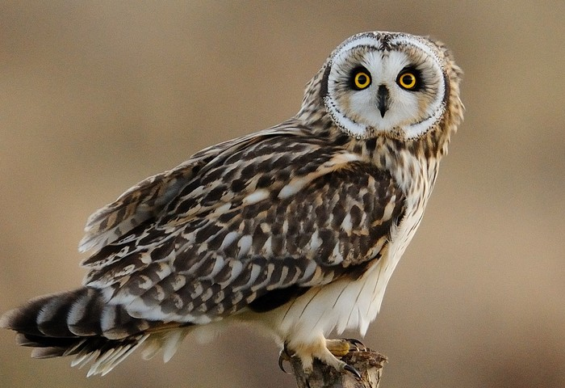

Животные

На территории Алтайского заповедника обитает 59 редких и исчезающих видов животных, что составляет около 52 % от всех охраняемых в Республике Алтай.
Обильная и разнообразная растительность способствует созданию благоприятных условий жизни для большого количества различных животных: более 66 видов млекопитающих, 3 видов пресмыкающихся, 6 видов земноводных, 19 видов рыб, таких как таймень, сиг, хариус, елец, окунь, голец, подкаменщик, телецкая килька.

Здесь восстановлена популяция ценного представителя семейства куницевых – соболя, среди хищников в заповеднике массово встречаются такие животные как медведи, волки, рыси, росомахи, барсуки, выдры, часто встречается горностай. Здесь обитает 8 видов парнокопытных: марал, кабарга, лось, горный баран, сибирская косуля, козерог, северный олень, кабан. С ветки на ветку перескакивают многочисленные белки, в лесах около Телецкого озера живет несколько видов редких представителей рукокрылых: Усатая ночница, Ночница Брандта, Бурый ушан, Рыжая вечерница и др., занесенные в Красную книгу Алтая и обитающие исключительно в местных ландшафтах.
В фауне птиц заповедника 311 видов, относящихся к 18 отрядам: воробьиные – 146 видов, кулики и чайки - 45, хищные птицы и совы – 38, гуси и утки – 27 видов. Более 50 видов обитающих в заповеднике птиц занесены в Красную книгу Республики Алтай.

Из гагар в заповеднике гнездится только чернозобая гагара. Отдавая предпочтение крупным безрыбным водоемам (Итыкуль, Сагоныш, Эриколь и др.), чернозобая гагара обитает и по небольшим озерам Джулукульской котловины.
Из поганок в заповеднике наиболее обычна красношейная. Эту миниатюрную птицу можно видеть почти на любом из бесчисленных термокарстовых озер в среднем течении Богояша и у озера Джулукуль, реже в центральных районах - в бассейнах Чульчи и Шавлы. На Телецком озере она встречается только в период весеннего и осеннего пролета вместе с чомгой и черношейной поганкой.

Единственная в заповеднике смешанная колония большого баклана и серебристой чайки находится на двух небольших (50 и 400 м2) островках озера Джулукуль, где среди крупных валунов птицы устраивают свои гнезда в непосредственной близости друг от друга.
Голенастые птицы – выпь, большая белая и серая цапли – встречаются нерегулярно в период сезонных миграций. Иногда в район Телецкого озера залетают колпица, фламинго – редкие птицы, внесенные в Красную книгу России. Не исключена возможность гнездования в заповеднике черного аиста. За последние 15 лет эту редкую птицу наблюдали восемь раз.